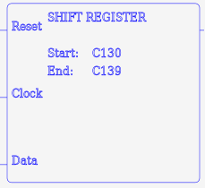
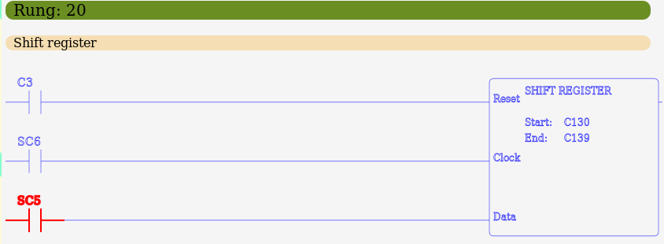

MBLogic
for an open world in automation
MBLogic
for an open world in automation
Shift Register Instructions
The shift register instruction implements a shift register which may be of any arbitrary length. It takes two parameters which define the start and end of the shift register. Both must be "C" Boolean addresses. The first parameter may be lower or higher than the second parameter. The shift register will always shift from the lower address to the higher address.
| Instr. | Descr. | # Param | X | Y | C | T | CT | SC | One Shot | Symbol |
|---|---|---|---|---|---|---|---|---|---|---|
| SHFRG | Shift register | 2 | X |  |
The value on the top of the logic stack is used as an input to the shift register the first location in the shift register will always be equal to the top of the logic stack. When the logic stack value (top - 1) transitions from off to on, the shift register will shift one position from the lower address to the higher address. When the logic stack value (top - 2) is on, the shift register is cleared and all bits are turned off.
The shift register instruction expects the following parameters.
- Start - A Boolean address specifying one end of the shift register.
- End - A Boolean address specifying the other end of the shift register. This must be of the same type as the first parameter.
SHFRG start end
Example:
// Shift register. NETWORK 1 STR X1 STR X2 STR X3 SHFRG C10 C20
Ladder Examples
The following shows examples in ladder format.
